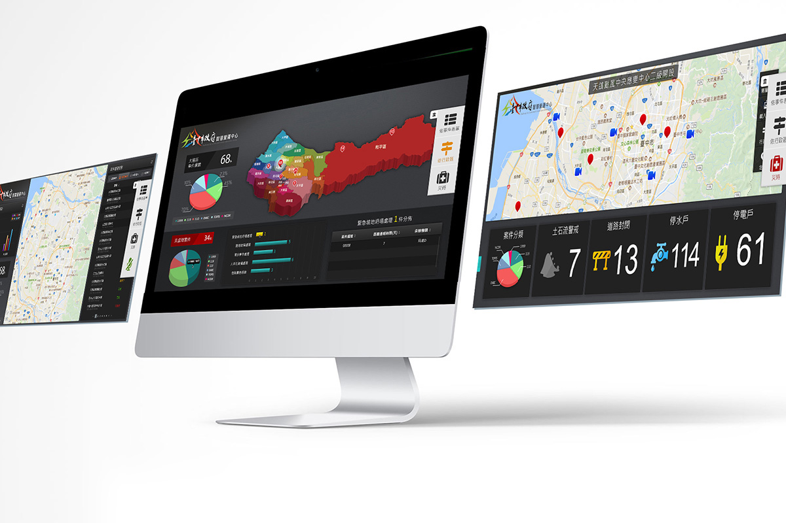
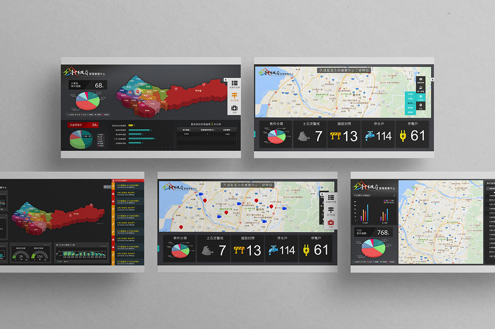
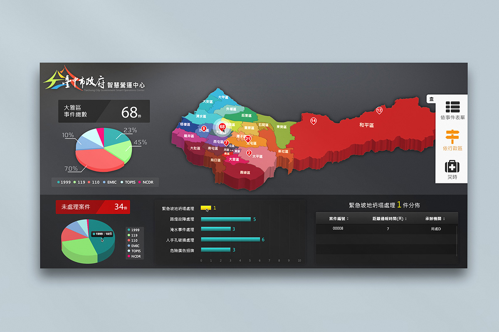
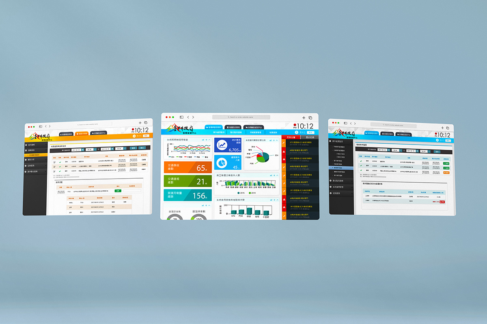

台中IOC智慧營運中心
- Category: UI design
- Client: 中華電信研究院智聯所
- Project date: 2018
台中市IOC設計案,包括網頁和看板dashboard兩大部分,經需求訪談後與數位使用者進行使用者測試,歸納出幾個系統痛點加以改善,在功能設計上設定版位可以自由移動,也可以新增/刪除,來因應每個員工不同的工作範圍所需的資訊不同.
dashboard左側藍色按鈕可以選擇需要的項目,像是颱風天就可以看到土石流/道路封閉/停水的資訊,方便讓市府人員做相應的對策或是輿情分析.